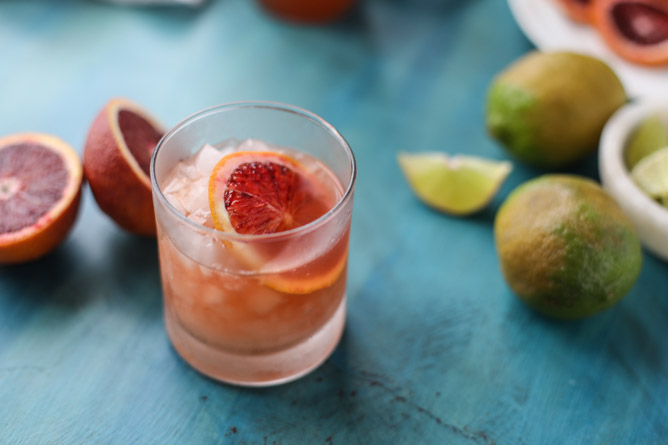

Tequila Orange Fizz

Description
An alcoholic drink made of tequila and oranges.
Ingredients
- 1 cup ice, or as needed
- 1 fluid ounce freshly-squeezed orange juice
- 1 1/2 fluid ounces anejo tequila
- 4 ounces sparkling mineral water (such as Topo Chico®)
- 1 wedge orange
- flaked salt (optional)
Steps
- Fill a rocks glass with ice. Add orange juice and tequila and top with mineral water. Garnish with orange wedge. If desired, sprinkle a pinch of salt over top.